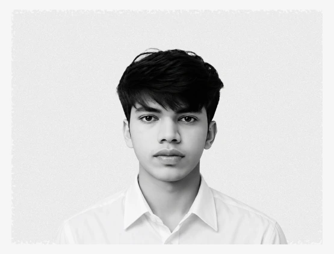
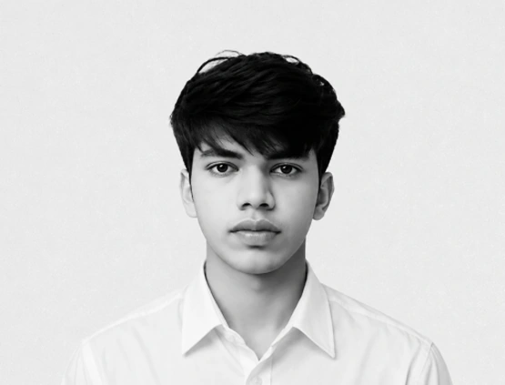
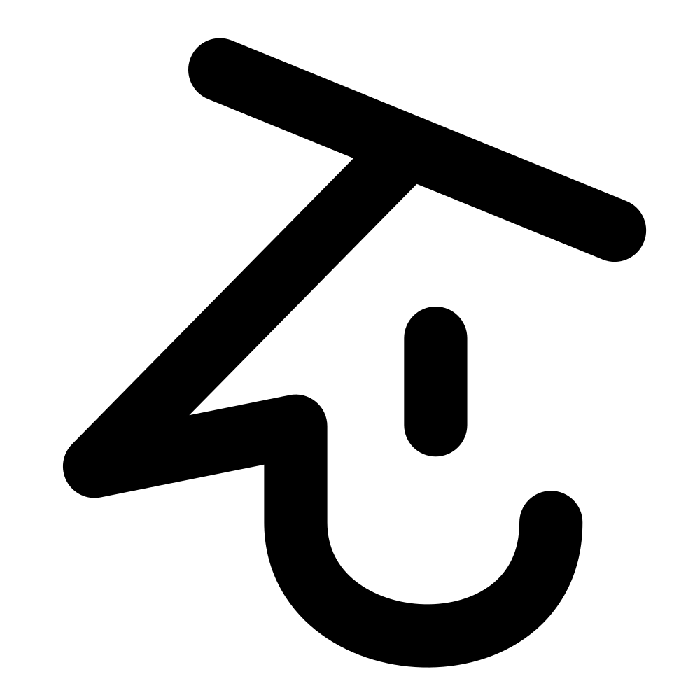

I've worked with early-stage teams and emerging technology to turn complex ideas into clear, usable products.
Right now I'm designing at Thine AI

, a personal superintelligence that acts like a founder for your life, and at Merlin AI, an AI super-app that brings your favourite models into one workspace. The work spans agents, multi-model experiences, and AI-powered browsing.AI is a big part of how I work. I use it to prototype quickly, ship early, and iterate on what I learn. Vibe coding lets me move past static designs and build something I can actually test, which makes it easier to question what a product could be.
Earlier work meant designing for very different users, problems, and technical constraints. Studying across Australia, Italy, and the UK shaped how I think about people, products, and technology in different contexts.
What excites me most is designing for what comes next: products that question how people might use technology.